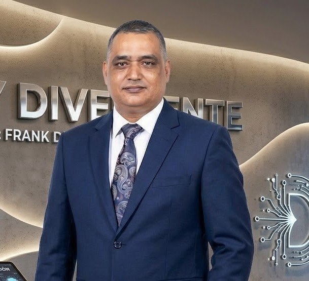

Casa García Gaona · Huachichil · Galeana

De los García del Huachichil · Emprendedor, activista e investigador genealógico · 1988 –
Licenciado coahuilense de los García del Huachichil, descendiente en 13.ª generación del Capitán Blas de la Garza Falcón por ambas líneas. Fundador de Grupo Empresarial GARGA de México y de la plataforma Soy Divergente.
El Lic. Francisco Javier García Gaona (FamilySearch GL1W-FX2) nació en 1988 en el noreste de México y pertenece a los García del Huachichil, rama familiar con raíces en Coahuila y Nuevo León. Su trabajo une la memoria familiar documentada con la acción pública y el emprendimiento.
Desciende en línea directa del Capitán Blas de la Garza Falcón (1591–1669) y de Beatriz González Hidalgo, poblador principal de Monterrey, por ambas líneas parentales.
Cap. Blas de la Garza Falcón → Juana de la Garza González (1622–1669), casada con el Alférez Lorenzo García de Ábrego → Joseph Lorenzo García de la Garza → Joseph García Morales → Miguel Joseph García Ramírez → Juan Joseph Luis García Ramos → José Antonio García Guajardo → Jesús García Saucedo → Jesús García Flores → Francisco García de la Peña → Hermilo García García → Jonás García Castilleja → Margarito García Vásquez → Lic. Francisco Javier García Gaona.
Cap. Blas de la Garza Falcón → Beatriz González Hidalgo (hija) → … → Ramona Gaona Samaniego → Lic. Francisco Javier García Gaona.
Impulsor de Genealogía Sefardí, archivo abierto que reúne actas, testamentos y cadenas de prueba de las familias fundadoras del noreste. Su propósito: que la historia de los García del Huachichil y de sus parientes se cuente con documentos, no con suposiciones.
Aclaración: no ha militado en el PRI. No confundir con el homónimo dominicano Francisco Javier García Fernández.
En el programa oral se nombra Franck Gaona. Presidente del Frente Cardenista de Reconstrucción Nacional en Coahuila. Fundador de Soy Divergente. Fundador de Grupo Empresarial Gaga de México. Impulsor de Genealogía Sefardí. Activista y luchador social del semidesierto coahuilense.
De Blas de la Garza Falcón por Juana de la Garza y Lorenzo García de Ábrego. Nudo del XVIII: Joseph García × Francisca Xaviera Ramos, 1751. Baja por Guajardo, Saucedo, Flores, Peña, Castilleja, Vázquez y Gaona.
| Generación | Casa |
|---|---|
| Blas de la Garza Falcón | De la Garza |
| Juana de la Garza × Lorenzo García de Ábrego | García Garza |
| Joseph García × Francisca Xaviera Ramos, 1751 | García Ramos |
| Juan Antonio García × Josefa Guajardo | García Guajardo |
| Antonio / Francisco García × Gertrudis Saucedo | García Saucedo |
| Jesús García × Rosalía Flores | García Flores |
| Jesús García × Jacoba de la Peña | García Peña |
| Francisco García de la Peña × María García | García Peña |
| Hermilo García × Macaria Castilleja | García Castilleja |
| Jonás García × Francisca Vázquez | García Vázquez |
| Margarito García × Ramona Gaona | García Gaona |
| Francisco Javier García Gaona | García Gaona |
Esta biografía también está publicada, con sus fuentes, en genealogiasefardi.site. Información avalada por Sefarad MX y genealogiasefardi.site.